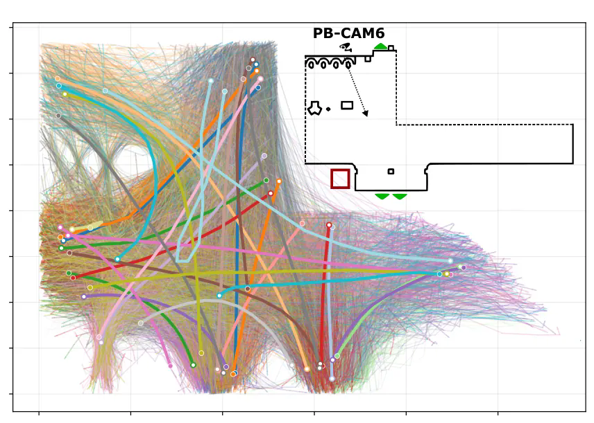

Adrián Pérez Herrero
Probabilistic machine learning · Time series · Scientific applications
PhD in Artificial Intelligence · University of Santiago de Compostela (CiTIUS) · Galicia, Spain
Research
I study probabilistic representations of time series, particularly when observations may be misaligned in time, their underlying dynamics may change, and the number of distinct patterns is unknown. My work draws on Bayesian nonparametrics, Gaussian processes and latent dynamical systems.
These questions have led me to ECG analysis, generative modelling of clinical signals, directional ocean-wave spectra and pedestrian trajectories. I am also interested in whether learned representations can help investigate scientific structure, beyond predictive performance alone.
Software and applications
-
bnomad
Research code for Bayesian nonparametric clustering of time series, including the
hdpgpcimplementation, sequential inference, examples and reproducibility material. - takotsubo Interpretable machine learning and generative ECG modelling for differentiating Takotsubo syndrome from myocardial infarction.
- Ocean waves Clustering and dynamical analysis of directional wave spectra from sparse buoy observations.

Publications
- 2026 F. Håkansson, P. Félix, E. Bodin, A. Gemvik, T. Olsson, J. Presedo, P. Tornvall, C. H. Ek, A. Pérez-Herrero. Generative machine learning applied to the electrocardiogram (ECG) to uncover relevant ECG features in distinguishing takotsubo syndrome from myocardial infarction. European Heart Journal 47, ESC abstract supplement. Conference abstract. DOI
- 2025 A. Pérez-Herrero, P. Félix, J. Presedo, C. H. Ek. Bayesian Nonparametric Dynamical Clustering of Time Series. Preprint. arXiv:2510.06919
- 2025 A. Pérez-Herrero, P. Félix, E. Bodin, A. Gemvik, T. Olsson, J. Presedo, P. Tornvall, C. H. Ek, F. Håkansson. Generative Machine Learning-Electrocardiography to Differentiate Takotsubo Syndrome from Myocardial Infarction. Preprint. SSRN:5702401
- 2022 A. Pérez Herrero, P. Félix Lamas, J. M. Rodríguez Presedo. Parameterisation of state duration in Hidden semi-Markov Models: an application in electrocardiography. Preprint. arXiv:2211.09478
Background
- 2021–2026PhD in Computer Science (Artificial Intelligence), University of Santiago de Compostela. Cum laude.
- 2024Visiting researcher, Computer Laboratory, University of Cambridge. Bayesian nonparametric modelling of ECG signals.
- 2019–2020MSc in Artificial Intelligence Research, UIMP and AEPIA. With honours.
- 2019–2020Data analyst consultant, LIS-Solutions, Santander.
- 2015–2019BSc in Mathematics, University of Cantabria. With honours.
Teaching and other activities
- TeachingAutomata Theory and Formal Languages, University of Santiago de Compostela (2023–2025); co-supervision of four BSc and MSc theses.
- TalksGaussian Process Summer School, Manchester (2026); CBCML Gaussian Process Workshop and Accelerate group meetings, Cambridge (2024).
- ProjectsXunta de Galicia PhD fellowship (2022–2026); participation in SOSFood and XAI4SOC. Dates and details in the CV.